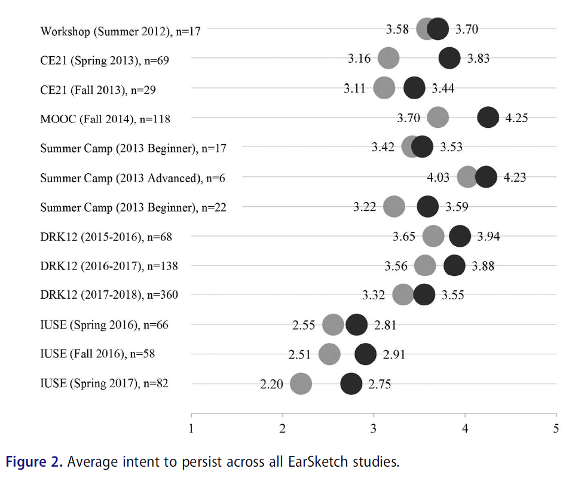
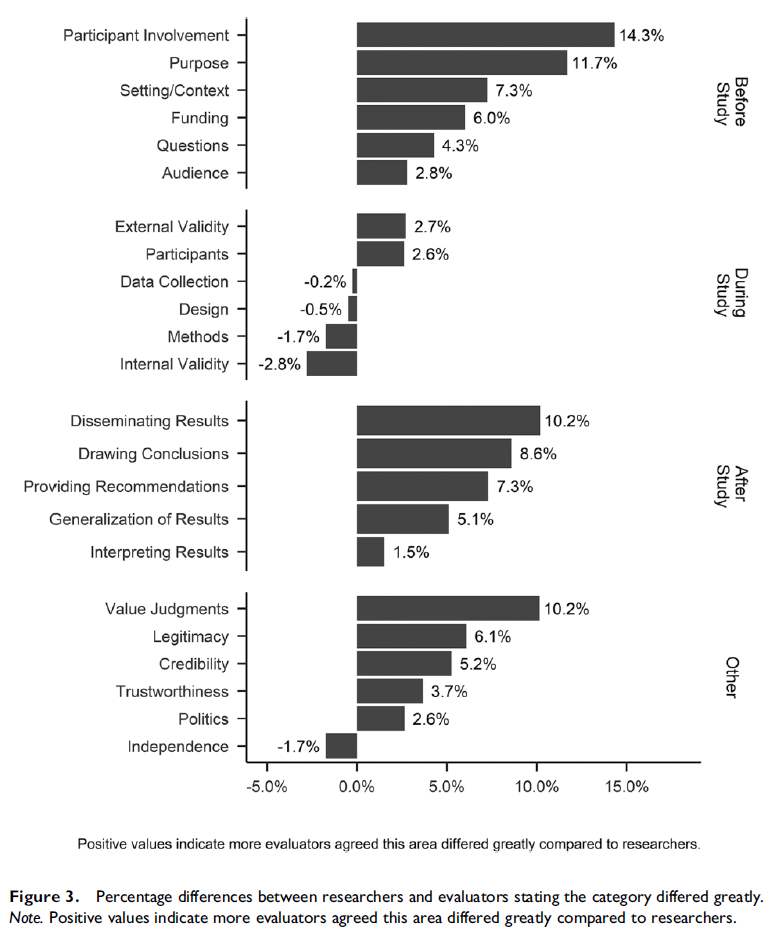

Visualizing data
“A picture is worth a thousand words,” and in a world in which journal articles have word count limits, figures and graphs are priceless. They are also an incredibly powerful way to examine your data because it can often illuminate patterns you may not be able to see through a table.
jamovi has some plots built into its platform, both under the Plots drop-down menu in the Descriptives analysis and as options for many of the inferential statistical analyses.
We’ll learn more about how to choose and conduct better data visualizations later, but for now here are some recommended visualizations depending on what you are trying to do. Note that we will do most of our visualizations in jamovi, but we may also learn how to visualize data via Excel. There are also excellent LinkedIn Learning courses on data visualization in Excel and other tools that I strongly recommend; they are free for you if you are a UW-Stout student.
When you want to visualize the distribution of a continuous variable
First, there are two Histogram options: Histogram and Density. These are useful for seeing the overall distribution of your data and to help check for normality. Which should you use? I think they’re both pretty great, and in fact you can combine the two to have a histogram plot with a density overlay. I like this option best because it presents more information and better lets us see if the if the density curve looks normally distributed.
When you want to visualize the distribution of a continuous variable split by a categorical variable
There are three options under Box Plots: Box plot, Violin (which is really a density plot with its mirror image!), Data (which can be Jittered or Stacked; I prefer Jittered so you can see the density of data points really well), and Mean. Personally, I love checking all four boxes! This gives you the best of all them: the distribution of your data with the Violin option, the quartiles and mean with the Box plot option, a visualization of all your data points using the Data option, which is really useful because the other two options can be hiding weird things in your data, and what the Mean is.
When you want to visualize the frequencies of a categorical variable
For this you would choose the single option under Bar Plots: Bar plot. It will simply show the frequencies of a categorical variable.
Remember: it is incredibly important to always visualize your data! You never know what descriptive statistics may be hiding.
Expanding your data visualization
Although these can be useful plots, I often do most of my data visualizations in other platforms. For most of my work, I use Excel because I find it pretty easy to make beautiful graphs. Here’s an example of a visualization I made in Excel4:

For some more complicated figures, I turn to the ggplot2 package in R. Here’s an example of a visualization I made in R5:
